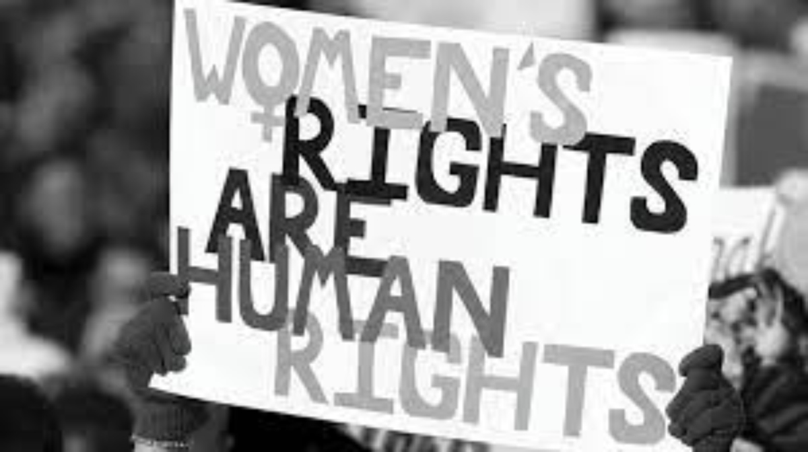
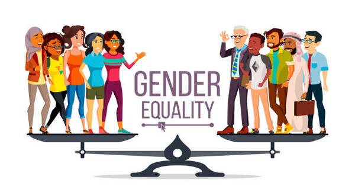
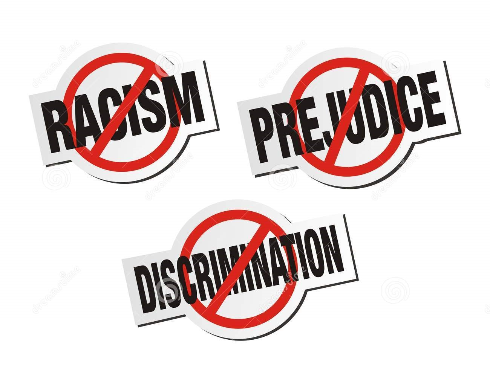

ISSUES
1. Gender violence :
Gender based-violence is the most pervasive human rights violation affecting one in three women worldwide.Conflict can result in higher levels of gender-based violence against women and girls, including arbitrary killings, torture, sexual violence and forced.
2. Child marriage :
Child marriage and other forms of gender-based violence. According to UNICEF, today more than 700 million women were married before they turned 18. Estimates suggest that each year, at least 1.5 million girls under 18 get married in India. Nearly 16 per cent adolescent girls aged 15-19 are currently married. It is fuelled by gender inequality, poverty, social norms and insecurity, and has devastating consequences all over the world. Here, you can discover more about the extent and impacts of child marriage and the progress we’ve made towards ending it.

3. Gender inequality:
Gender inequality is the social phenomenon in which people are not treated equally on the basis of gender. This inequality can be caused by gender discrimination or sexism. The treatment may arise from distinctions regarding biology, psychology, or cultural norms prevalent in the societyOn average, women have just 75% of the same rights as men. Gender inequality is a catchall issue that can encompass many things, including the other items on this list. But gender inequalities go beyond what we lay out below, and overall they form the biggest gender issue of our time.
4. Gender integration :
Moreover, many women, including transgender, gender diverse and intersex women, face compounded forms of discrimination—due to factors such as their age, race, ethnicity, disability, or socio-economic status—in addition to gender-based discrimination.Effectively ensuring full enjoyment of human rights by women, girls, men, boys and people of diverse gender identities requires, first, a comprehensive understanding of the social structures, social norms and stereotyping, and power relations that frame not only laws and politics but also the economy, social dynamics, family life and community life.
5. Right to education :
The right to education has been recognized as a human right in a number of international conventions, including the International Covenant on Economic, Social and Cultural Rights which recognizes a right to free, primary education for all, an obligation to develop secondary education accessible to all with the progressive introduction of free secondary education, as well as an obligation to develop equitable access to higher education, ideally by the progressive introduction of free higher education.
The right to education is reflected in article 26 of the Universal Declaration of Human Rights, which states:
"Everyone has the right to education. Education shall be free, at least in the elementary and fundamental stages. Elementary education shall be compulsory. Technical and professional education shall be made generally available and higher education shall be equally accessible to all on the basis of merit. Education shall be directed to the full development of the human personality and to the strengthening of respect for human rights and fundamental freedoms. It shall promote understanding, tolerance and friendship among all nations, racial or religious groups, and shall further the activities of the United Nations for the maintenance of peace. Parents have a prior right to choose the kind of education that shall be given to their children."

6. Racism :
Racism is discrimination and prejudice against people based on their race or ethnicity. Racism can be present in social actions, practices, or political systems that support the expression of prejudice or aversion in discriminatory practices. The ideology underlying racist practices often assumes that humans can be subdivided into distinct groups that are different in their social behavior and innate capacities and that can be ranked as inferior or superior.

7. Economic inequality :
Gender inequality in India refers to health, education, economic and political inequalities between men and women in India.Various international gender inequality indices rank India differently on each of these factors, as well as on a composite basis, and these indices are controversial.Gender inequalities, and their social causes, impact India's sex ratio, women's health over their lifetimes, their educational attainment, and even their economic conditions.
8. Gender poverty gaps :
The gender poverty gap has not improved significantly over the past half decade. In 1966, 12.1 percent of women and 8.4 percent of men aged 18-64 lived below the official poverty line. In 2021, 11.7 percent of women in this age group were living in poverty, compared to 9.3 percent of men. In 2021, the poverty threshold for a single person was $12,880 in annual income. Households led by single women with children faced poverty rates of 31.3 percent that year, more than double the 15.5 percent poverty rate for households led by single men with children, according to the National Women’s Law Center.
 9. Sexual and reproductive health :
Women’s legal rights in many countries — including many where Concern works — conflict with their human rights and requirements for quality reproductive healthcare. The United Nations Population Fund (UNFPA) estimates that:
9. Sexual and reproductive health :
Women’s legal rights in many countries — including many where Concern works — conflict with their human rights and requirements for quality reproductive healthcare. The United Nations Population Fund (UNFPA) estimates that:
6.5% of women around the world want to avoid pregnancy, but are unable to do so due to a lack of access, social stigma, and harmful gender norms (among other reasons)
Among those women, 172 million women are using no birth control method at all
Where data is available, nearly 25% of all women feel unable to say no to sex with their partner
12 million girls aged 15-19 give birth each year, and more than half of these births occur in low-income countries
Approximately 755,000 girls under the age of 15 become mothers each year
Nearly 50% of all pregnancies each year — 121 million in total — are unintended
10. Equal access of justice for women and men:
Right of individuals and groups to obtain a quick, effective and fair response to protect their rights, prevent or solve disputes and control the abuse of power through a transparent and efficient process, in which mechanisms are available, affordable and accountable, and conducted on the basis of equality.